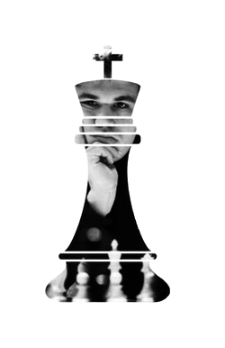

Biography:
Sven Magnus Øen Carlsen, the Mozart of Chess, the GOAT—he's a man of many names and even more talent. Magnus Carlsen stands as an unrivaled force in the world of chess, a living legend whose extraordinary talent and unwavering dominance have forever etched his name into the annals of the game's history. Widely regarded as the greatest player of all time, Carlsen's unparalleled mastery of the 64-squared battlefield is characterized by his deep understanding of the game's complexities, impeccable strategic insight, and his willingness to squeeze blood from a stone. He is the only player ever to hold every world championship title. Simultaneously. This means being the best in the world at: Classic, Rapid, Blitz, Bullet, and the Fischer Random format. Not just being the best in the world in those formats, but doing so at the same time in a dominant enough fashion to stave off the competition for multiple years at a time. There's a good reason why, at only 10 years old, he was dubbed "The Mozart of Chess". However, unlike Mozart's short time at the top of his field, Magnus has positioned himself to be a dominant force in chess since he took the number one spot over 12 years ago. Even today, beyond the age at which most chess players peak, he is head and shoulders above those who would claim to be his peers. The current generation has no hopes of dethroning his place at #1 on the rating ladder. He seems eager to hold off the next generation as well; most players in the 15–25 age range still seem to be in Magnus' far-cast shadow. Perhaps one will grow to rise out of it, or perhaps we'll have to wait for the generation after for someone to topple an -- at that point, aged -- Carlsen. No matter what, he's cemented his name as one only to be breathed in the same presence as Garry Kasparov or Bobby Fischer. One whose competition isn't in the present but against the legacy of those in the past and those who will come in the future. The GOAT; Sven Magnus Øen Carlsen.
| Name: | Magnus Carlsen |
|---|---|
| Peak Classical Rating: | 2882, #1 historically |
| Peak Rapid Rating: | 2919, #1 historically |
| Peak Blitz Rating: | 2986, #1 historically |
Quotes:
Some people think that if their opponent plays a beautiful game, it's OK to lose. I don't. You have to be merciless.- Magnus Carlsen
Too weak, too slow.- Magnus Carlsen